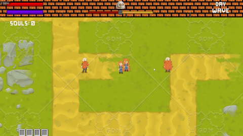
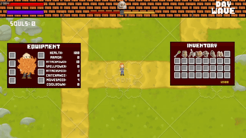

Project Overview
Soul Snatched: Ginger Edition is a solo-developed 2D top-down ARPG where the player defends villages from nightly zombie invasions. The core focus is on systemic design: a tight day/night loop, a morality-driven soul siphoning system, and wave-based combat that responds to player choices.
This project is my primary commercial indie title and a showcase of my strengths as a gameplay and UI programmer: building reusable systems, data-driven content, and responsive game feel.
Gameplay Media
Work-in-progress visuals - focus is on systems and feel rather than final art.

Vendor & shop UI: opening the blacksmith, hovering items, and preparing gear before nightfall.

Equipment & stats: swapping gear and seeing character stats update in real time.
What the Footage Demonstrates
- Vendor & shop UI driven by reputation and in-game currency.
- Equipment window updating stats dynamically as gear changes.
- Inventory and tooltips reacting to item selection and focus.
- UX focus on quick readability and clear feedback for player decisions.
Combat Showcase
A short demonstration of Soul Snatched's core combat loop. Includes: night spawn warning, enemy waves, hit feedback, and player death sequence.
Core Systems & Architecture
How the game is structured under the hood.
Day/Night and Wave Manager
- Central WaveManager controls spawn timing, enemy composition, and lane routing.
- Day/night state machine triggers village recovery, shop refreshes, and preparation windows.
- Difficulty curves are data-driven, allowing tuning without changing core code.
Morality, Souls, and Reputation
- Reputation value ranges from hostile to revered, clamped and color-coded in the UI.
- Souls are a separate currency gained only from villagers, not enemies.
- Vendors and NPCs query reputation to decide inventory, prices, and dialogue options.
- Hair growth / visual state is mapped to soul thresholds for instant feedback.
Equipment, Stats, and Combat
- Items defined via ScriptableObjects with base stats, rarity, and tags.
- Equipment slots drive a stat aggregator that feeds into damage and defense calculations.
- Melee and ranged attacks share a common combat pipeline (hit detection, damage event, feedback).
UI & UX Implementation
- Inventory, vendor, and equipment panels built as separate components, wired through events.
- Tooltip and context menus reuse a shared data model and are repositioned based on cursor offset.
- Reputation meter, hair state, and currency text subscribe to central game events rather than polling.
Professional Development Practices
How I treat this project like a production game, not just a prototype.
Code Quality & Architecture
- Consistent naming conventions and strict encapsulation of gameplay state.
- Separation of data (ScriptableObjects) from behavior (controllers and managers).
- Use of events and interfaces to decouple UI from gameplay systems.
- Refactoring passes to remove unused methods and keep responsibilities clear.
Tools & Workflow
- Git-based version control with feature branches and descriptive commits.
- In-editor debug views for wave states, reputation, and AI decisions.
- Use of Unity Profiler to track spikes from spawning, pathfinding, and UI updates.
Production Mindset
- Designing systems with extension in mind (new enemies, new villages, new wave types).
- Planning toward an Early Access release with a clear vertical slice.
- Balancing scope carefully: strong core loop first, content expansion second.
My Role
I am the sole developer on Soul Snatched. I handle programming, system design, and implementation, while leveraging free and placeholder art so I can prioritize gameplay, feel, and scalability.
Current Status & Roadmap
- Core wave, morality, and reputation systems: functional.
- Vendor and equipment systems: implemented and connected to reputation.
- Next steps: content polish, more enemy types, and public demo build.